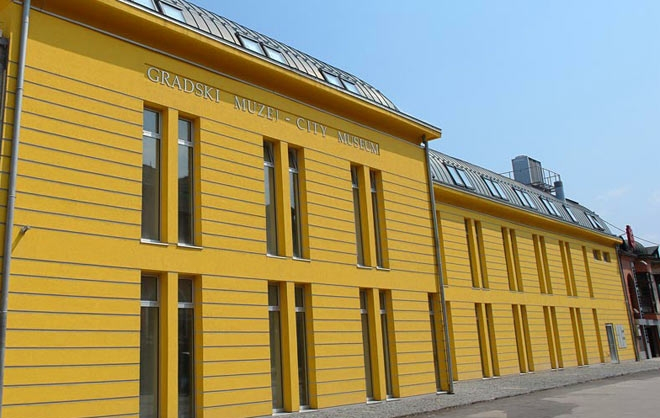

Zenica City Museum

The Museum of the City of Zenica is a public institution, founded in 1966. The founder was the
Municipality of Zenica. Our museum belongs to the category of general museums. The administrative apparatus,
the library and 3 museum collections (archaeological, historical and ethnological) were housed in several
buildings (the building of the former Madrasa, Hadžimazić House, Synagogue and Memorial House in Šerići). In 1982,
the city gallery was joined by the city gallery together with its space (House of Culture).
Until 1992, our institution employed more than 20 workers (professional and administrative staff). Also,
the Museum of the City of Zenica was the organizer of several scientific symposia (Symposium on Ancient Ceramics
1971, Symposium on Mining and Metallurgy 1972, Symposium on Medieval Bosnia and European Culture 1973),
Conference of Ethnologists at the Yugoslav level, and organizer of several archaeological campaigns in Zenica .
For the past four years, they have organized a total of 306 promotional programs, museum and art exhibitions, scientific programs and forums, literary promotions, and concerts.
Among the most important exhibitions are certainly those produced by the Museum of the City of Zenica,
"Six Centuries of Islam", "100 Years of the Parish of St. Elijah", "Toys as an Educational Medium", and guest
exhibitions "Kicenje i libade", and "Money from Antiquity to Modern Times". "From the holdings of the Museum of
Republika Srpska", "Charters and Letters of Medieval Bosnian Rulers" from the holdings of the Museum of the City
of Tešanj, "I, Bosnian Ban Kulin" from the History Museum of BiH, "Meša Selimović, life and work", and "Miroslav
Krleža on the stage ”From the Museum of Literature and Theater Arts of BiH.